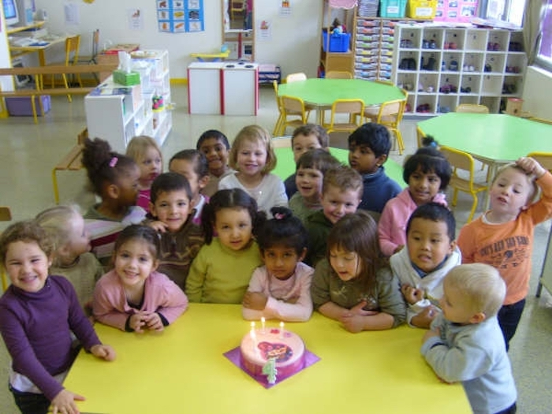

2023-08-24 08:00

The Supreme Court, as an increasingly illegitimate institution, has robbed the majority of its civil liberties while granting Christian Nationalists a wish list long denied by the Constitutional separation of church and state. In a perversion of judicial interpretation, discrimination no longer exists — unless it’s us pushing back on the “rights” of Christian Nationalists to discriminate for “religious” reasons.
The Court’s rulings have emboldened the Christian right to attack every secular institution — including schools, libraries, school boards — and the Court grants them permission to suppress Black history, demonize LGBTQ+ people, and censor ideas and science that conflict with their own narrow religious views.
This new era of Christian fundamentalism could last 30 years, or will hopefully be of shorter duration. But a sharp and angry reaction to religious repression will likely follow. Around 2016 Ireland began repealing repressive laws based on its long troubled relationship with the Church. France, once overrun by saints and cathedrals, is now hostile to religion and is among the top ten countries with the largest percentage of atheists. Germany, the seat of the Holy Roman Empire and the birthplace of Protestantism, is now one of the least religious nations in Europe. While familiarity doesn’t necessarily breed contempt, it often leads to a realization that religion is toxic to democracy. It’s even beginning to dawn on Israelis that their tolerance of religious extremism – in a religious state! – is about to cost them their democracy – at least the one on their side of the Green Line.
Of the articles I read this morning, two couldn’t have been more different.
One was from Massachusetts Informed Parents, a project of the Christian Nationalist Massachusetts Family Institute, which tries to force their “Christian” values down everybody’s throats, particularly in matters of education. MFI was incensed that the Lexington schools talk to kids about the diversity found in their own district, about skin color, understanding that some parents are not mom and dad but mom and mom, or that sometimes people suffer silently from disabilities. That some boys and some girls don’t like to play with toys traditionally associated with their sex. Or that we have to be respectful of how people think of themselves, that some people are white, some black, some bi- and multi-racial. Or ask: what is empathy? All this is simply too much for the “Christians” at MFI, who think that any discussion of empathy and acceptance “makes it easier to turn kids into good little activists.”
The other was a wonderful essay by Suzanne Stillinger, a queer early childhood educator who does the work that MFI despises so much, and who took the opportunity in Commonwealth Magazine to thank her community for embracing her and the work she does in Northampton. Stillinger addresses the Christian Right’s objection to her work: “The epithet ‘groomer,’ a new slur based on a tired and very old stereotype, is being tossed at any adult who supports LGBTQ+ rights, but is especially damaging when directed at those of us who work with children. There are those who insist that talking about LGBTQ+ identities radicalizes children, when all of the data tells us that the true risk lies in denying children access to information and support that validates their full sense of self and belonging.”
So, what we see here are two ways of living in and seeing the world. One seeks to preserve hate and ill-judgement while marginalizing certain people, and to keep children’s eyes closed to both injustice and a changing world. The other is to open children’s eyes to social realities, and to celebrate the differences and the beauty of diversity in their communities, schools, and classrooms – to foster acceptance and solidarity, not hate.
There was a time when Americans wanted to say, “we’re all in this together.” I think we still want to. The work the Lexington and Northampton schools are doing affirms this way of moving within the world. In contrast, the toxic efforts of hate groups like MFI and MIP only undermine social cohesion.
The choice really is this stark – we have to choose the kind of world we want to live in.